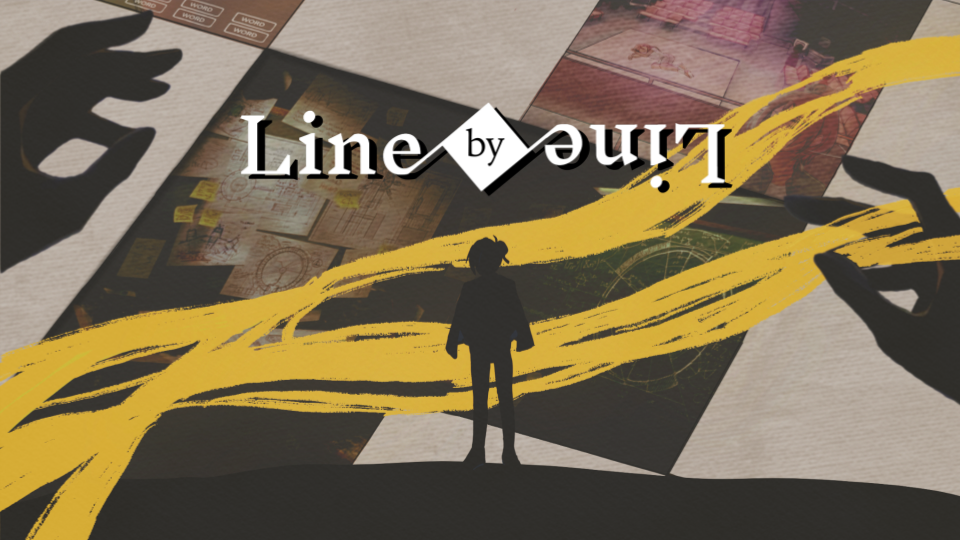

Line By Line is a third person detective game where the solution lies hidden within the lines of a crossword puzzle. Uncover the truth by finding clues, interacting with the world and its inhabitants, and solving crosswords.
Overview
Line By Line is a third person detective game centered around solving mysteries through crossword puzzles. Players take on the role of Casey “Ace” Witt, a retired detective who approaches every case through the lens of language, pattern recognition, and deduction.
The story begins at a local theater, where a play is suddenly interrupted when the lead actor collapses on stage. As production halts and tensions rise among the dysfunctional crew, Casey steps in to uncover the truth. By gathering clues, questioning characters, and solving crosswords, players piece together the mystery line by line.
Key Features
- Crossword-Based Deduction: Solve cases by filling in crossword puzzles that represent clues, relationships, and logic.
- Investigation Gameplay: Explore environments, interact with characters, and collect information to inform puzzle solving.
- Narrative-Driven Mystery: A character-focused story set within a tense and chaotic theater production.
- Unique Perspective: Crosswords are not just puzzles, but the core system for how the protagonist understands the world.
Project Documents
Choose a document, then scroll inside the preview.
My Role & Production
I am the Lead Producer for Line By Line, a USC Advanced Games Project (AGP) now in full production. I helped grow the project from its original four-person core into a multidisciplinary team: 4 → 27 Developers.
I built and maintain the production structure that supports our larger team, including sprint planning, task tracking, and shared workflows that keep work organized across disciplines.
I work directly with leads across design, engineering, art, narrative, UI/UX, audio, QA, usability, and marketing to break down work into actionable tasks and help each lead delegate it with clear ownership.
I manage sprint structure, priorities, and task ownership, tracking progress and coordinating dependencies between disciplines. I work with leads to identify risks, resolve blockers, and adjust priorities so each team understands what needs to happen next and who is responsible.
Status
Currently In Production with a multidisciplinary team of 27 Developers.